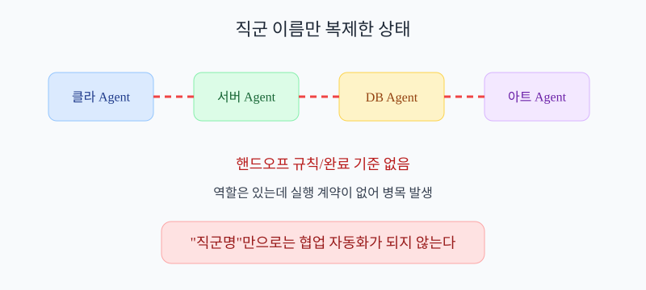
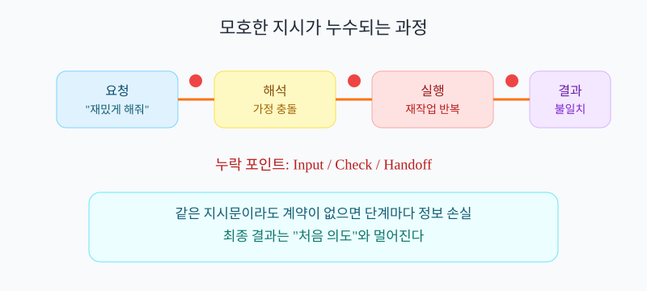
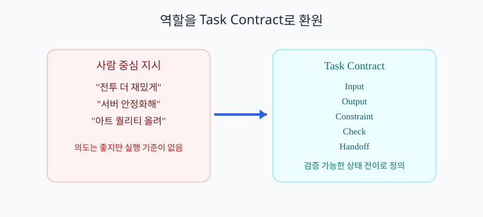
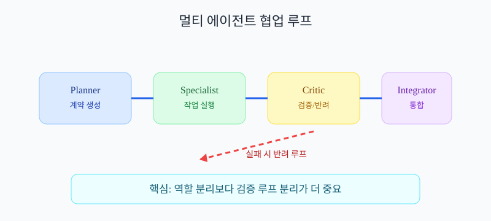
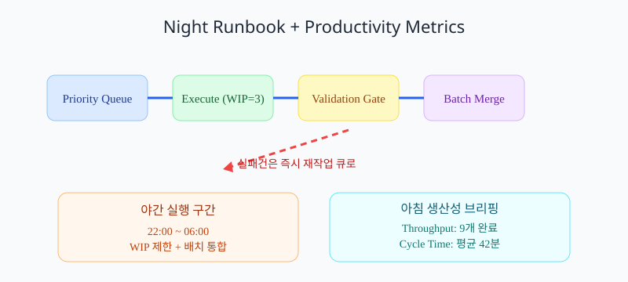

에이전트 AI가 일하기 좋은 환경을 생산성 관점으로 설계하는 제일 원리
겉보기엔 맞아 보이지만, 실제로는 자주 멈춰.
이유는 간단해. 인간 직군 설명에는 암묵지(말로 적지 않았지만 팀이 관성으로 아는 룰)가 많고, 에이전트는 명시된 계약(입력/출력/검증이 문서로 적힌 규칙) 없이는 실행을 못 해.
직군명은 역할이고, 에이전트는 실행 단위가 필요해.
아니. 이번 문서 범위는 생산성이야.
목표는 "최소 개입으로 완료율을 높이는 운영 원리"를 잡는 것.
| 같은 지시문 | 사람 팀 | 에이전트 팀 |
|---|---|---|
| "전투를 더 재밌게 해줘" | 경험으로 맥락 보완 후 진행 | 해석 분기 후 충돌 가능 |
| 결정 기준 | 회의/관계/관성으로 수렴 | 명시된 기준 없으면 정지 |
| 완료 판정 | "대충 됐다" 합의 가능 | 검증 규칙 없으면 무한 반복 |

역할은 많아 보이지만, 핸드오프 규칙이 없어 병목이 생김
거의 항상 세 가지야.
1) 입력이 모호함, 2) 완료 조건이 없음, 3) 다음 담당자가 불명확함.
이 세 개가 빠지면 에이전트는 "생산성 높은 착각"만 만들고 끝나.
| 누락된 요소 | 에이전트에서 생기는 현상 |
|---|---|
| 입력 정의 없음 | 서로 다른 가정으로 병렬 작업 후 충돌 |
| 완료 기준 없음 | 반복 수정 루프에 갇힘 |
| 인수 조건 없음 | 다음 에이전트가 작업 거부 또는 재작업 |

단계마다 정보가 새면 마지막 결과는 처음 의도와 멀어짐
업무 = 상태 변경 + 검증 가능한 증거로 바꾸면 돼.
"클라이언트 개발"이 아니라 "입력 지연 120ms→60ms" 같은 상태 목표로 정의하는 거야.
| 항목 | 10초 정의 | 안 쓰면 생기는 일 |
|---|---|---|
| Input (입력) | 작업 시작에 필요한 데이터 | 사람마다 다른 가정으로 시작 |
| Output (산출물) | 작업이 끝났다고 볼 결과물 | 끝났는지 판정 불가 |
| Constraint (제약) | 시간/비용/품질 한도 | 좋아 보여도 예산 초과 |
| Check (검증) | 통과/실패를 가르는 테스트 | 느낌으로 승인되어 품질 흔들림 |
| Handoff (인수) | 다음 담당자에게 넘기는 형식 | 다음 단계에서 재작업 발생 |
충분해. 이 다섯 줄이 있으면 에이전트는 추측 대신 실행한다.
직군 언어를 실행 계약 언어로 치환하는 핵심 포맷이야.
| 인간 중심 표현 | 에이전트 실행 표현 |
|---|---|
| "전투 밸런스 맞춰줘" | Input(로그), Output(파라미터 diff), Check(KPI 기준) |
| "서버 안정화해줘" | Output(P99 220ms→150ms), Check(부하테스트 리포트) |
| "아트 퀄리티 올려줘" | Constraint(메모리/드로우콜), Check(씬 예산 통과) |

모든 직군 작업을 같은 계약 형식으로 바꾸면 자동화가 가능해짐
도메인은 달라도 실행 타입은 비슷해.
대부분 분석(Analyze) → 생성(Build) → 검증(Verify) → 인수(Handoff) 4단계로 귀결돼.
| 단계 | 10초 정의 | 왜 필요 |
|---|---|---|
| Analyze (분석) | 문제 원인과 현재 상태를 숫자로 파악 | 원인 모르면 패치가 운빨이 됨 |
| Build (생성) | 수정안/산출물을 실제로 만듦 | 아이디어만 있고 결과물이 없음 |
| Verify (검증) | 테스트 기준으로 통과/실패 판단 | "좋아 보임" 착각으로 품질 흔들림 |
| Handoff (인수) | 다음 단계에서 바로 쓸 수 있게 전달 | 다음 담당자가 다시 분석부터 시작 |
| 직군 | 에이전트로 치환한 기본 작업 | 완료 증거 |
|---|---|---|
| 클라이언트 | 프레임 타임 분석, 입력 반응 수정 | 프레임/지연 측정 로그 |
| 서버 | 병목 탐지, 동시성 패치, 부하 실험 | P95/P99 레이턴시 리포트 |
| DB | 쿼리 플랜 분석, 인덱스 실험 | 쿼리 시간 Before/After |
| 아트/애니 | 예산 체크, 룩 가이드 일치 검사 | 메모리/드로우콜/리그 규칙 통과 |
| 역할 | 초보자 설명 | 없으면 생기는 문제 |
|---|---|---|
| Planner | 무엇을 먼저 할지 정하는 스케줄러 | 중요하지 않은 일부터 처리 |
| Specialist | 실제 산출물을 만드는 작업자 | 계획만 있고 실행이 없음 |
| Critic | 통과/실패를 판정하는 검사자 | 불량 결과가 다음 단계로 넘어감 |
| Integrator | 통과한 결과를 합쳐 배포하는 역할 | 각자 만든 결과가 분리되어 방치 |

역할 분리가 아니라 검증 루프 분리가 핵심
생산성 관점에선 네 가지가 핵심이야.
1) 우선순위 큐, 2) WIP Limit, 3) 검증 게이트, 4) 아침 브리핑.
Throughput (시간당 완료 작업 수)는 한 시간에 끝낸 작업 개수야. 왜 필요해? 팀이 실제로 얼마나 끝내는지 보기 위해. 안 쓰면 "열심히 했다"만 남고 생산성은 안 보여.
Cycle Time (착수부터 완료까지 걸린 시간)은 작업 1개가 끝나기까지 걸린 시간. 왜 필요해? 병목 구간 찾기 위해. 안 쓰면 왜 느린지 원인을 못 찾는다.
| 운영 요소 | 없을 때 | 있을 때 |
|---|---|---|
| Priority Queue (우선순위 큐) |
중요도 낮은 일부터 처리 | 가치가 큰 일부터 완료 |
| WIP Limit (동시 작업 상한) |
20개 시작, 0개 완료 | 3개씩 끝내며 흐름 유지 |
| Validation Gate (검증 통과 문) |
오류가 다음 단계로 전파 | 실패가 즉시 차단되어 재작업 감소 |
| Throughput / Cycle Time (완료량 / 완료시간) |
속도 저하 원인을 추측에 의존 | 병목 구간을 숫자로 개선 |
| Morning Brief (아침 요약) |
밤 작업 결과 파악 불가 | 완료/실패/보류를 1분 내 파악 |

큐-실행-검증-통합 흐름에 Throughput/Cycle Time 지표를 붙이면 개선이 쉬워진다
아래 10개를 먼저 잡으면 돼.
전부 "에이전트 AI가 일하기 좋은 환경"을 만드는 생산성 원리다.
| 원리 | 10초 정의 | 왜 지금 필요한가? |
|---|---|---|
| Task Contract | 입력/출력/검증/인수 조건을 고정한 작업 계약 | 모호한 지시를 실행 가능한 단위로 바꾸기 위해 |
| RACI (Responsible, Accountable, Consulted, Informed) |
누가 실행/결정/자문/공유 대상인지 정리한 책임표 | 결정 지연과 책임 핑퐁을 막기 위해 |
| Definition of Ready (착수 정의) |
작업 시작 전에 반드시 갖춰야 할 조건 | 준비 안 된 작업 착수로 생기는 재작업 방지 |
| Definition of Done (완료 정의) |
작업이 끝났다고 볼 체크 조건 | "끝났다/아니다" 논쟁을 줄이기 위해 |
| Interface Contract (인터페이스 계약) |
모듈 간 입력/출력 형식을 고정한 약속 | 통합 단계 대규모 충돌을 줄이기 위해 |
| Priority Queue (우선순위 큐) |
가치/긴급도 기준으로 작업 순서를 정하는 규칙 | 같은 시간에 더 중요한 일을 끝내기 위해 |
| WIP Limit (동시 작업 상한) |
동시에 벌릴 작업 개수 제한 | 완료율을 올리고 컨텍스트 스위칭을 줄이기 위해 |
| Validation Gate (검증 통과 문) |
통과한 결과만 다음 단계로 넘기는 규칙 | 불량 산출물의 연쇄 전파를 차단하기 위해 |
| Throughput / Cycle Time | 완료량과 완료시간을 추적하는 생산성 지표 | 병목을 숫자로 찾아 개선하기 위해 |
| Postmortem Loop + ADR (사후 분석 루프 + 의사결정 기록) |
실패를 규칙으로 환원하고 결정 근거를 남기는 체계 | 같은 실패를 반복하지 않고 학습 속도를 높이기 위해 |
1순위는 Task Contract + RACI + Done/Ready.
2순위는 Interface Contract + Priority Queue + WIP Limit.
3순위는 Validation Gate + 지표 + Postmortem Loop.